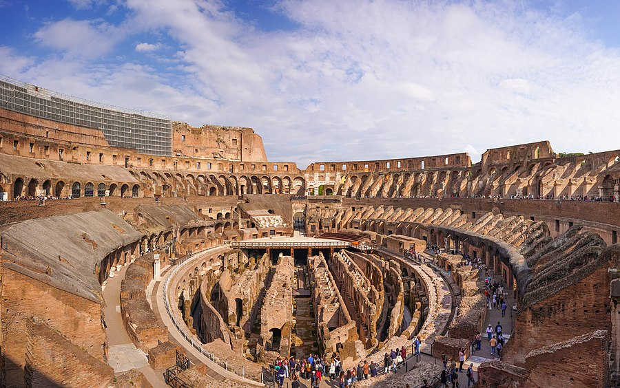
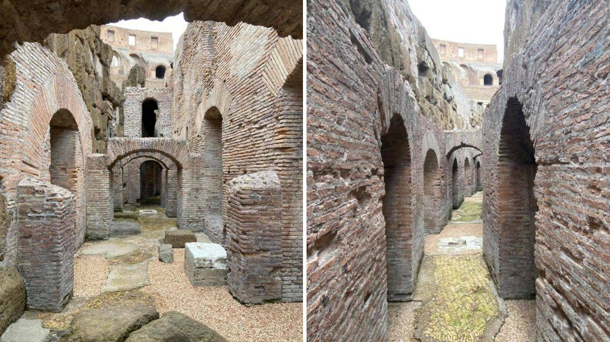
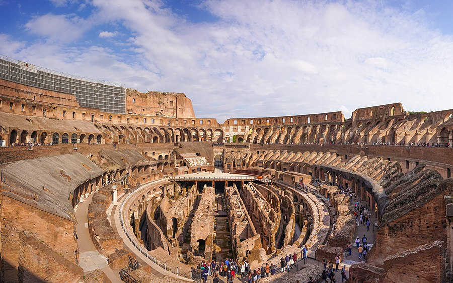
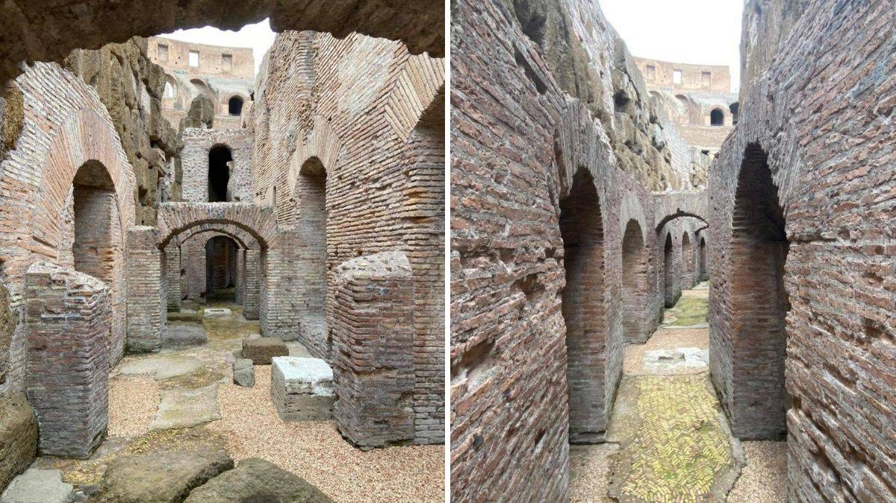

História
O Coliseu, também conhecido como Anfiteatro Flaviano, foi construído entre 70 e 80 d.C. durante o reinado dos imperadores Vespasiano e Tito. Era utilizado para espetáculos públicos, como lutas de gladiadores e eventos teatrais.
Arquitetura
Com capacidade para cerca de 50.000 espectadores, o Coliseu é uma das maiores e mais impressionantes estruturas da Roma Antiga. Sua arquitetura é um exemplo notável do uso do arco e do concreto.
Visitas
Hoje, o Coliseu é uma das atrações turísticas mais populares do mundo. Recomenda-se comprar ingressos antecipadamente para evitar filas longas.
Galeria
 


